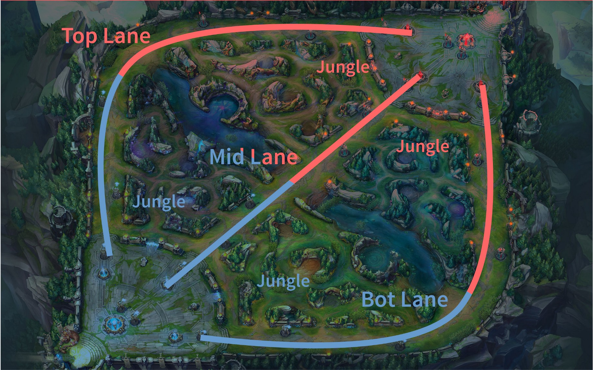
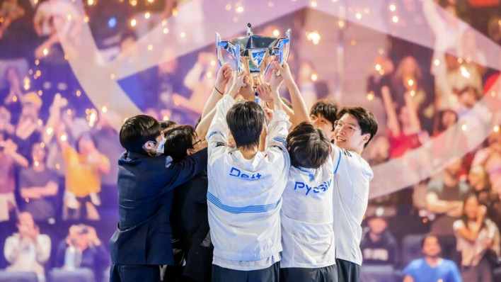
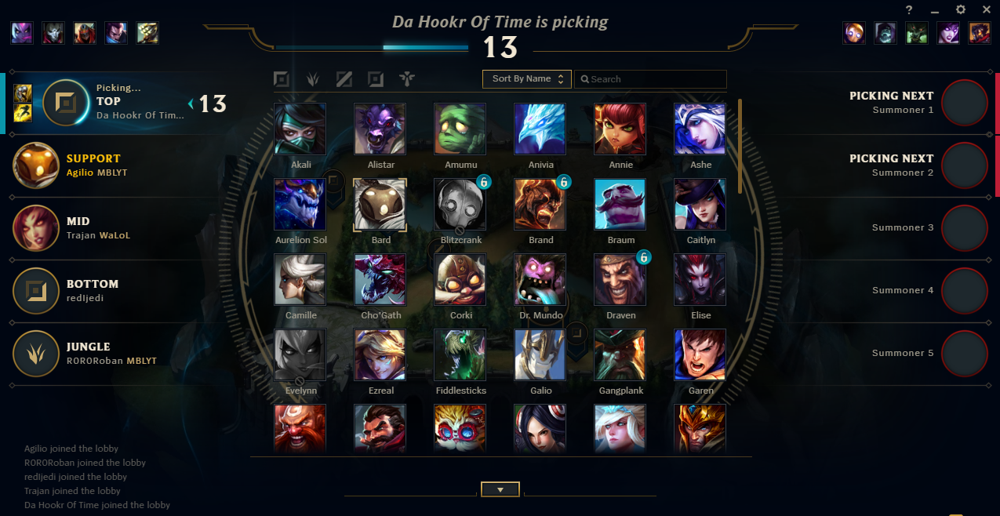
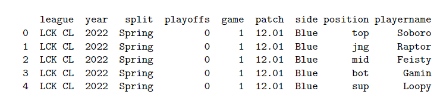
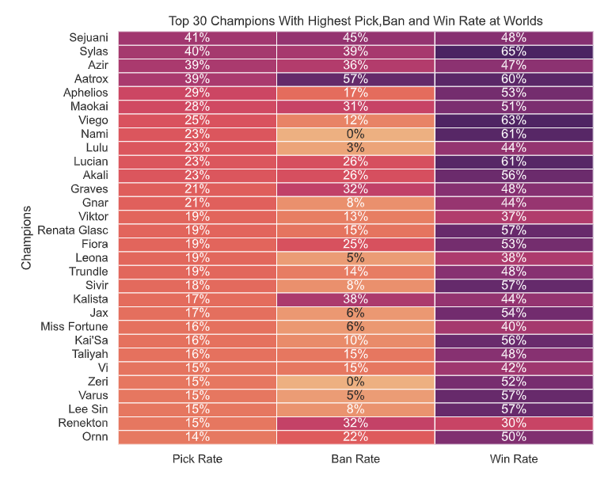
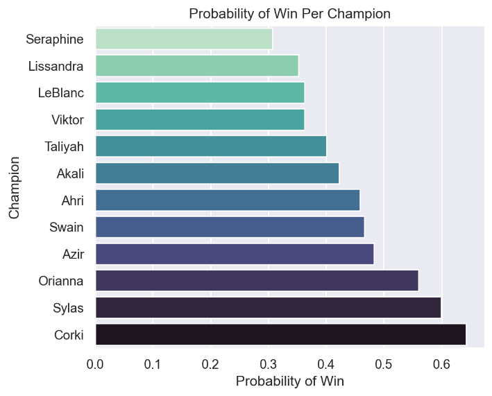
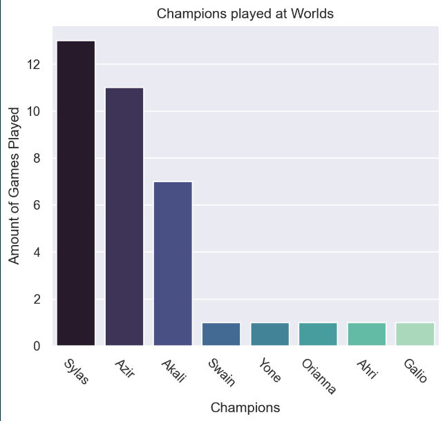
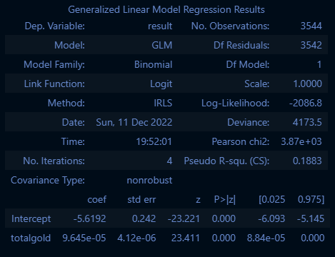

E-sports Analytics and Predictions
League of Legends
What is League of Legends?
League of legends is defined as a MOBA (multiplayer online battle arena)
Where two teams of five champions each controlled by a player go head to head against each other in order to secure a win by taking out the enemy nexus.
A champion refers to the player character. There are 164 champions currently in the game. Each champion is unique and posses different and unique abilities.
The players are responsible for acquiring objectives and killing the enemies to order to generate a lead.
What is League of Legends? (Cont.)
- League have a number of different maps the players can play on. However, the map that is the most played and is used for competitive play is known as Summoners rift.

Traditionally, based on the location on the map each player is assigned a specific role with the exception of bot lane where there are two players
Often, the second player in the bot lane is referred to as support. Every other player’s role is simply the part of the map they play on.
Current Region Tiers at worlds
League of Legends as a E-sport
Riot games hosts one of the biggest e-sport tournaments with a prize of $2.5 million every year.
This year alone the viewer count for just the finals games alone was over 5.1 million views.
Many of the teams employ the use of Data Scientists in order to gain an advantage.
Winning can result in brand deals and merchandising for the winning team.

Drafting Champions
As mentioned, before the actual game begins the players select what champions they wish to play in a match
Before the champions are picked however, there is a champion banning phase where players ban champions they don’t wish to play against. There are a total of 10 bans each game.
A champion can only be picked once between the two teams. Each player tries to pick the best champion.
Picking the right champion in a professional game can make the difference between a win or a loss.

Project Goals
The overall goal of the project was to simulate being a data scientist for one of the teams and working on some of the projects a data scientist would encounter.
In-order to accomplish that our first objective is identifying champions that our team would like to prioritize.
Identifying the optimal champions for the players to pick.
Trying to determine the winner of a game before the game even occurs.
The Data Set
- To archive our goals we will be utilizing the data set obtained from Oracleselixir
- The Oracleselixir dataset contains end game information for every game that was played this year from January to November
- The information was collected by taking the end game results from LoL-Esports.com.
- For every game the datasets first presents performance of each player per game.
- Then the dataset shows a cumulative team data for the two teams that played that game.
- There a total of 116 variables and 147,865 rows of observations in our data set

Libraries Used
Data Processing
- Pandas
- Numpy
Plotting
- Seaborn
- Matplotlib.pyplot
Machine Learning
- Sklearn
- Metrics (Confusion Matrix and Accuracy Scores)
- LogisticRegression
- Statsmodels.api and Statsmodels.formula.api
Champion’s Pick, Win, and Ban rates at the world championship

The plot here show cases the top 30 champions at the world championship with a high pick rate, win rate, and low ban rate. Based on the plot we can make the following assumptions:
Sejuani, Sylas, Azir, Aatrox, and Aphelios were the most prioritized champions.
Some of the other champions to look out for are Nami, Lulu, Leona, Jax, and Varus.
Best Champions for a Player (Model assessment)
Multiple Logistic Regression
- Predictors: Champions played.
- Target variable: Win if playing the champion.
Equation can be given as: \[P(Win)={e^{(-0.19+0.034*{Champion_1}) + (-0.19-0.112*{Champion_2})...} \over 1+e^{(-0.19+0.034*{Champion_1}) + (-0.19-0.112*{Champion_2})...}}\]
Accuracy scores ranged from 59% to 100%
- More champions a player plays the harder it is for our model to predict accurately.
- Predictions can be improved by getting more data for the player.
Best Champions for a Player
- Applying the model to a player named Zeka from the team DRX.


Probability of win (Model assessment)
- Equation for our model: \[P(Win)={e^{(-5.619+9.64e^{-05}*{Total_{Gold}})} \over 1+e^{(-5.619+9.64e^{-05}*{Total_{Gold}})}}\]
- Confusion Matrix:
| Positive | Negative | |
|---|---|---|
| Positive | 1249 | 523 |
| Negative | 551 | 1221 |


Probability of win model tests
- Our model’s accuracy score is given as 70%
- We can use our model to determine a winner between T1 and JD Gaming.
- The probability of win for T1: 57.82%
- The probability of win for JD Gaming: 52.75%
- Hence, we can assume that T1 would win based on a higher probability.
- T1 did in fact win against JD Gaming at the world championship semi-finals.
- If we apply our model for the teams T1 and Cloud 9
- Probability of win for T1: 57.82%
- Probability of win for Cloud 9: 57.02%
- The probabilities are too close to one another.
- There is no change between the probabilities for T1 since its the mean total gold earned by the team.
- Needs more variables to be reach 95% accuracy or greater.
Moving Forward
- Working on improving the accuracy for our models
- Since our data set is massive we can try and answer other questions. Such as,
- Game times in professional play.
- Players that had a high impact at the World championships.
- Differences between high and lower region tiers.
- Using different types of models and trying various other techniques.
References
- Riot Games. League Of Legends. https://www.leagueoflegends.com/en-us/. Accessed: December 13th 2022. 2022.
- Jose Garcia. “League Of Legends Worlds 2022 Finals Breaks Peak Viewership Record”. In: Du- alShockers (2022). Accessed: December 13th 2022.
- Riot Games. What is League of Legends. https://www.nasa.gov/nh/pluto-the-other-red-planet. Accessed: December 13th 2022. 2015.
- Tim Sevenhuysen. LoL Esports Match data from Oracles Elixir. https://oracleselixir.com/tools/d ownloads. Game data from all the games, accorss all regions, and events for League of Legends Esports, Viewed: December 13th 2022. 2022.
- LoLEsportsStaff.“Learnmoreaboutthe2022LeagueofLegendsWorldChampionshipinNorth America”. In: League of Legends Esports (2022). Accessed: December 13th 2022.
- Kevin Webb. “More than 100 million people watched the League of Legends World Champi- onship, cementing its place as the most popular esport”. In: Insider (2019). Accessed: December 13th 2022.